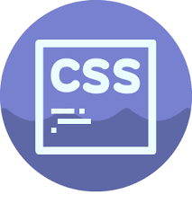

Background-position

Задает начальное положение фонового изображения, установленного
с помощью свойства background-image. В CSS3 допустимо указывать
несколько значений для каждого фона, перечисляя значения через запятую.
Background-attachment

Свойство background-attachment устанавливает, будет ли прокручиваться
фоновое изображение вместе с содержимым элемента. Изображение может
быть зафиксировано и оставаться неподвижным, либо перемещаться совместно
с документом. В CSS3 можно указать несколько значений для ряда
фоновых изображений, перечисляя значения через запятую.
Background-repeat

Определяет, как будет повторяться фоновое изображение,
установленное с помощью свойства background-image. Можно установить
повторение рисунка только по горизонтали, по вертикали или в обе стороны.
В CSS3 допустимо указывать несколько значений для каждого фона,
перечисляя значения через запятую.